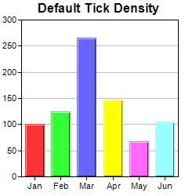
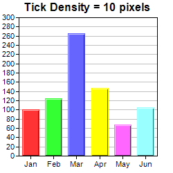

This example demonstrates how to control the axis tick density in auto-scaling.
By default, in auto-scaling, ChartDirector automatically chooses the tick spacing for the axis.
In some cases, you may want to suggest the tick spacing to use. This can be done by using
Axis.setTickDensity.
Note that the actual tick spacing chosen by ChartDirector may not be equal to the suggested tick spacing. The suggested tick spacing is only a lower bound. It is because there may be other constraints when choosing the ticks. For example, the tick positions should be "neat numbers", such as (0, 5, 10, ...), and not arbitrary numbers like (0, 4.792, 9.584, ...). Also, by default, the axis starts and ends at tick positions (configurable using
Axis.setRounding), which means the axis length must be divisible by the tick spacing. These and other constraints will affect the exact ticks being chosen.
In this example, one of the charts is drawn using the default tick spacing. The other chart is drawn using a suggested tick spacing of 10 pixels. Note that the actual tick spacing is slightly larger than 10 pixels.
The following is the command line version of the code in "cppdemo/ticks". The MFC version of the code is in "mfcdemo/mfcdemo". The Qt Widgets version of the code is in "qtdemo/qtdemo". The QML/Qt Quick version of the code is in "qmldemo/qmldemo".
#include "chartdir.h"
void createChart(int chartIndex, const char *filename)
{
// The data for the chart
double data[] = {100, 125, 265, 147, 67, 105};
const int data_size = (int)(sizeof(data)/sizeof(*data));
const char* labels[] = {"Jan", "Feb", "Mar", "Apr", "May", "Jun"};
const int labels_size = (int)(sizeof(labels)/sizeof(*labels));
// Create a XYChart object of size 250 x 250 pixels
XYChart* c = new XYChart(250, 250);
// Set the plot area at (27, 25) and of size 200 x 200 pixels
c->setPlotArea(27, 25, 200, 200);
if (chartIndex == 1) {
// High tick density, uses 10 pixels as tick spacing
c->addTitle("Tick Density = 10 pixels");
c->yAxis()->setTickDensity(10);
} else {
// Normal tick density, just use the default setting
c->addTitle("Default Tick Density");
}
// Set the labels on the x axis
c->xAxis()->setLabels(StringArray(labels, labels_size));
// Add a color bar layer using the given data. Use a 1 pixel 3D border for the bars.
c->addBarLayer(DoubleArray(data, data_size), IntArray(0, 0))->setBorderColor(-1, 1);
// Output the chart
c->makeChart(filename);
//free up resources
delete c;
}
int main(int argc, char *argv[])
{
createChart(0, "ticks0.png");
createChart(1, "ticks1.png");
return 0;
}
© 2023 Advanced Software Engineering Limited. All rights reserved.